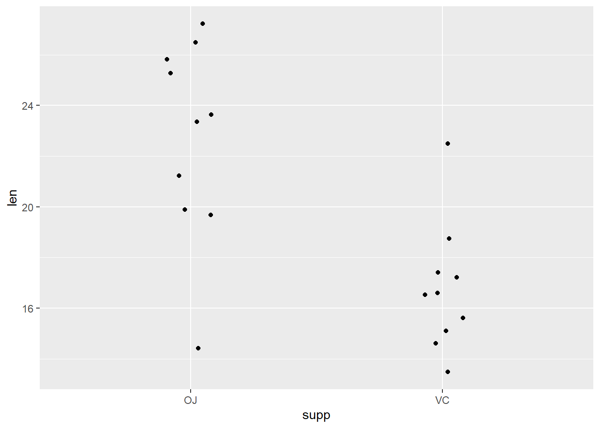
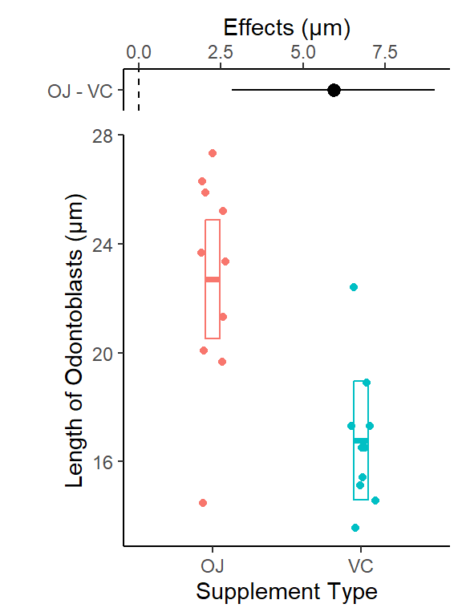
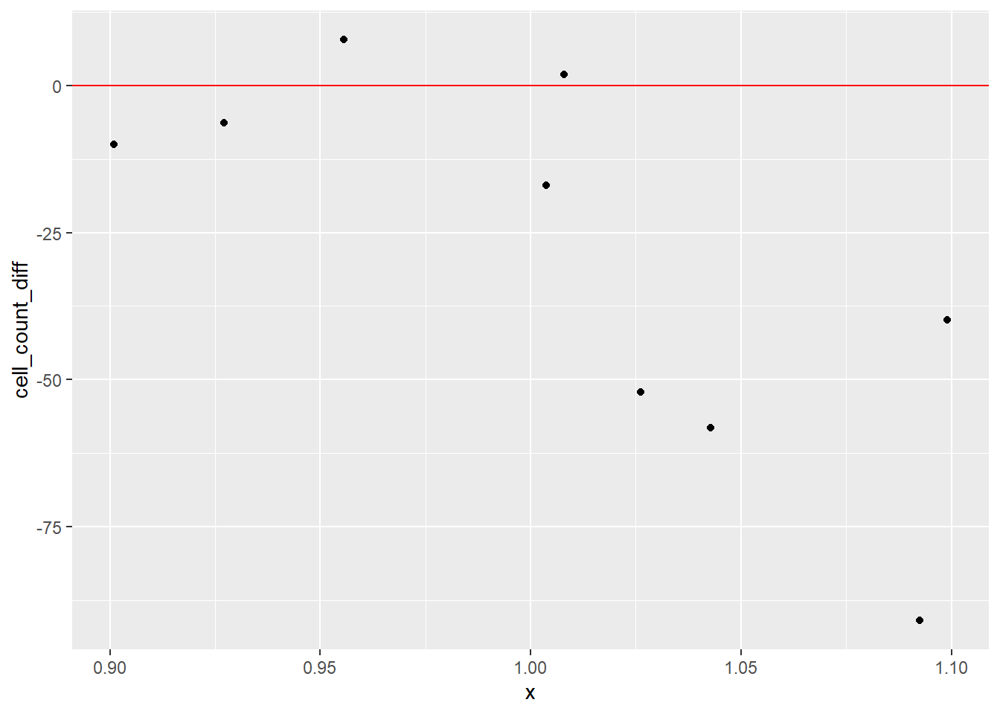

# load tidyverse packages
library(tidyverse)
# load broom package (for linear model related functions)
# note broom package is installed as part of tidymodels package
library(broom)
# load skimr package - to use skim() function for descriptive statistics
library(skimr)
# load emmeans "estimated marginal means" package
library(emmeans)
# load cowplot package - used to combine multiple ggplots into a single figure
library(cowplot)BIO 5100 Comparing Means from independent and paired samples
Load Packages
The tidyverse package is actually a collection of multiple R packages https://www.tidyverse.org/packages/ including the ggplot2 package (for plotting) and dplyr package (for organizing and summarizing data). And you can load these (and others packages in the tidyverse) all at once using library(tidyverse).
The ggplot2 Package we will use primarily for making plots (and is part of the tidyverse) has great help pages: https://ggplot2.tidyverse.org/reference/index.html
The dplyr Package we will use for “data wrangling” (e.g., organizing, summarizing) and it also has (not as extensive) help pages https://dplyr.tidyverse.org/ (plus cheat sheets RStudio > Help > Cheatsheets)
The broom Package is installed as part of tidymodels meta-package (similar to tidyverse). More information/examples of broom package functions can be found here: https://broom.tidymodels.org/articles/broom.html
The emmeans Package will be used to output means, 95% CIs, p-values and other statistics from specified lm() objects
Lots of vignettes here that demo what the package can do: https://cran.r-project.org/web/packages/emmeans/index.html
This one reviews the basics: https://cran.r-project.org/web/packages/emmeans/vignettes/AQuickStart.html
The cowplot Package will be used here to combined multiple ggplots into a single figure. But it also contains functions for all sorts other plotting purposes (some cool/useful, others I would not necessarily advise using):
General modeling strategy:
See here for an overall description of the approach from exploratory analysis to reporting results:
Comparing means of 2 independent samples
Linear model w/ a categorical X (explanatory) variable
For this analysis we’ll use one of the data sets built into R:
ToothGrowth (The Effect of Vitamin C on Tooth Growth in Guinea Pigs)
From: Crampton, E. W. (1947). The growth of the odontoblast of the incisor teeth as a criterion of vitamin C intake of the guinea pig. The Journal of Nutrition, 33(5), 491-504. doi: https://academic.oup.com/jn/article-abstract/33/5/491/4726758.
Note: R has many built-in data sets and a list of them can be viewed with the data() function
In the ToothGrowth data set the response is the length of odontoblasts (cells responsible for tooth growth) in 60 guinea pigs. Each animal received one of three dose levels of vitamin C (0.5, 1, and 2 mg/day) by one of two delivery methods, orange juice or ascorbic acid (a form of vitamin C and coded as VC).
#Each built in data set has a help file that can be viewed:
?ToothGrowth
#View the structure of the full data set:
glimpse(ToothGrowth)Rows: 60
Columns: 3
$ len <dbl> 4.2, 11.5, 7.3, 5.8, 6.4, 10.0, 11.2, 11.2, 5.2, 7.0, 16.5, 16.5,…
$ supp <fct> VC, VC, VC, VC, VC, VC, VC, VC, VC, VC, VC, VC, VC, VC, VC, VC, V…
$ dose <dbl> 0.5, 0.5, 0.5, 0.5, 0.5, 0.5, 0.5, 0.5, 0.5, 0.5, 1.0, 1.0, 1.0, …While the full data set has 1 numeric response (len) and 2 categorical explanatory variables (Supplement Type and Dose) we are going to reduce the data set to only one explanatory variable (supp: Supplement Type) with 2 levels (OJ: Orange Juice; VC: Ascorbic Acid) by filtering the data to select only guinea pigs that received a dose == 1
Rows: 20
Columns: 2
$ len <dbl> 16.5, 16.5, 15.2, 17.3, 22.5, 17.3, 13.6, 14.5, 18.8, 15.5, 19.7,…
$ supp <fct> VC, VC, VC, VC, VC, VC, VC, VC, VC, VC, OJ, OJ, OJ, OJ, OJ, OJ, O…Biological Question: Does supplement type of vitamin C have an effect on length of odontoblasts (cells responsible for tooth growth) in guinea pigs? (when given a dose level of 1 mg/day)
Initial Exploratory Analysis
# Individual Value Plot (Stripchart) length by supplement type
dat_tg |>
ggplot(aes(x = supp, y = len)) +
geom_jitter(width = 0.1)
# Histogram of length faceted by supplement type
dat_tg |>
ggplot(aes(x = len)) +
geom_histogram(bins = 6) +
facet_grid(rows = vars(supp))# Boxplots of length by supplement type
dat_tg |>
ggplot(aes(x = supp, y = len)) +
geom_boxplot()| Name | group_by(dat_tg, supp) |
| Number of rows | 20 |
| Number of columns | 2 |
| _______________________ | |
| Column type frequency: | |
| numeric | 1 |
| ________________________ | |
| Group variables | supp |
Variable type: numeric
| skim_variable | supp | n_missing | complete_rate | mean | sd | p0 | p25 | p50 | p75 | p100 | hist |
|---|---|---|---|---|---|---|---|---|---|---|---|
| len | OJ | 0 | 1 | 22.70 | 3.91 | 14.5 | 20.30 | 23.45 | 25.65 | 27.3 | ▂▁▆▃▇ |
| len | VC | 0 | 1 | 16.77 | 2.52 | 13.6 | 15.27 | 16.50 | 17.30 | 22.5 | ▇▇▇▁▂ |
Checking assumptions
Linear model assumptions:
More details/descriptions can be found here:
t-test assumptions are also described in (way too much) detail here: https://en.wikipedia.org/wiki/Student%27s_t-test#Assumptions
The most relevant are:
- data are independent (e.g., not paired, grouped, or otherwise related by some other factor that the grouping variable already in your model), collected with a random sampling approach
- model residuals are normally distributed
- Constant or “equal” variance or homoskedasticity
In practical terms just check to make sure during exploratory analysis:
- there are no “large” outliers
- the distributions of each group are not highly skewed or bimodal (although this is often hard to judge at small sample sizes)
- Check for “equal” variances among groups (homoscedasticity)
- This assumption says that all groups (samples) of data have “the same” variance (e.g., spread, sd), but in terms of checking it’s about making sure the standard deviations are not too different from each other.
First look at plots above (histogram, boxplot, individual value plot): Does the spread look similar in 2 samples?
Then assess equal variance assumption with a “rule of thumb”:
- Primary rule: (When n/group > 5 & n/groups similar) Consider alternative approach if largest sd > 4*smallest sd (i.e., variances not similar enough)
- Secondary Rule: (When n/group NOT similar) Be extra cautious when largest sd is associated with the group with the smallest n. In this case consider alternative approach if largest sd > 2*smallest sd.
- see Zar Biostatistical Analysis textbook for more info (and/or could cite in thesis/paper if necessary)
If there are large outliers, one/both of the distributions are very highly skewed, and/or the spread in the data is very different between groups, then can consider other options for calculating the 95% CIs (e.g., bootstrapping), using a Generalized linear model, and/or running a non-parametric test.
Descriptive Statistics for comparing two groups
For EACH GROUP (SAMPLE) of numerical response variable length we’ll calculate:
Magnitude of the effect size
We can then pull values from the calculated statistics above to make an additional calculation of the magnitude of the effect size (i.e., how different are the 2 means?)
effect size (difference between the means)
effect size as a percent difference (difference between the means/smaller mean * 100)
Note: “Direction” of effect size in this instance refers to indicating which mean is larger.
# effect size: mean OJ - mean VC
22.7-16.8[1] 5.9# effect size expressed as percentage difference
# use round() function to round to 0 decimal places
round((22.7-16.8)/16.8*100, 0) [1] 35Fit linear model
Note this code/process is adapted from: https://www.middleprofessor.com/files/applied-biostatistics_bookdown/_book/oneway.html#oneway
- If you want more background, detailed explanation or need to do a more complicated analysis, that is a great resource.
Fit the linear model (numerical response w/ 1 categorical X value)
- in
lm()formula:Y ~ X
Response (numeric variable) ~ Explanatory (in this case a categorical variable)
lm_len_supp <- lm(len ~ supp, data = dat_tg)
lm_len_supp
Call:
lm(formula = len ~ supp, data = dat_tg)
Coefficients:
(Intercept) suppVC
22.70 -5.93 Coefficient table
Create a “coefficient table” in a “tidy” table format using tidy() function from broom package, with a conf.int = T argument to include calculation of 95% CIs.
- Note: the coefficient table is not the most useful/friendly format and can include some irrelevant information. While it is a good idea to create and review it, you will mostly use/interpret the emmeans and contrast (pairs) tables below.
# use tidy function from broom package with the linear model object
lm_len_supp_coef <- tidy(lm_len_supp, conf.int = TRUE)
lm_len_supp_coef# A tibble: 2 × 7
term estimate std.error statistic p.value conf.low conf.high
<chr> <dbl> <dbl> <dbl> <dbl> <dbl> <dbl>
1 (Intercept) 22.7 1.04 21.8 2.11e-14 20.5 24.9
2 suppVC -5.93 1.47 -4.03 7.81e- 4 -9.02 -2.84Create emmeans table
Using emmeans() function from the emmeans package
Provides the basics: https://cran.r-project.org/web/packages/emmeans/vignettes/AQuickStart.html
& Lots of vignettes for other uses of functions in this package: https://cran.r-project.org/web/packages/emmeans/index.html
# create emmeans table object
lm_len_supp_emm <- emmeans(lm_len_supp, ~ supp)
lm_len_supp_emm supp emmean SE df lower.CL upper.CL
OJ 22.7 1.04 18 20.5 24.9
VC 16.8 1.04 18 14.6 19.0
Confidence level used: 0.95 The means (emmean column) in the emmeans table are technically “modeled” means, but here, and for many linear models, these will be equal to the sampled means (the means calculated from each group of raw data). This may not be the case for some more complicated models.
-
The 95% CIs in the emmeans table (lower.CL to upper.CL) are calculated using all the data in the model (using a pooled standard deviation and sample size across both groups of data). You’ll notice they both have the same size:
OJ: 20.5 to 24.9 = 4.4
VC: 14.6 to 19.0 = 4.4
If 95% CIs were calculated using just the OJ (or VC) data for each mean individually they would be different sizes.
For more explanation see: https://www.middleprofessor.com/files/applied-biostatistics_bookdown/_book/oneway.html#the-emmeans-table-is-a-table-of-modeled-means-and-inferential-statistics
Points & means plot w/ (model) 95% CIs
# note in ggplot below we had to turn the emmeans object into a tibble (data.frame) so it would work as data in ggplot
# as_tibble(lm_len_supp_emm)
plot_lm_len_supp_emm <- dat_tg |>
ggplot(aes(x = supp, y = len, color = supp)) +
geom_jitter(width = 0.1) +
ylab("Length of Odontoblasts (μm)") +
xlab("Supplement Type") +
#use emm object as 2nd data table to plot 95% CIs
geom_crossbar(
data = as_tibble(lm_len_supp_emm),
aes(y = emmean,
ymin = lower.CL,
ymax = upper.CL),
width = 0.1
) +
theme_classic() +
theme(legend.position = "none")
plot_lm_len_supp_emmThis plot shows the raw data for each group (OJ, VC) as points. The geom_crossbar() plots the group means (middle line) and the 95% CIs from the associated linear model which were calculated in the emmeans table above.
- Note
geom_pointrange()could be used instead ofgeom_crossbar()if you prefer that style of plotting mean + CIs https://ggplot2.tidyverse.org/reference/geom_linerange.html (scroll down to bottom of page to see various examples of ways to plot error bars around a mean)
Contrasts table & corresponding “effects” plot
“Contrasts table” using contrast() function from emmeans package
- For details on the argument
method =see help(“contrast-methods”)
lm_len_supp_pairs <- contrast(lm_len_supp_emm,
method = "pairwise") |>
summary(infer = TRUE)
# Note: method = "revpairwise" switches the order in subtraction for comparison
# (up to researcher/you to determine which is more appropriate)
lm_len_supp_pairs contrast estimate SE df lower.CL upper.CL t.ratio p.value
OJ - VC 5.93 1.47 18 2.84 9.02 4.033 0.0008
Confidence level used: 0.95 This table is important for reporting treatment effect and 95% CI and the object lm_len_supp_pairs is used in the ggplot code below to create the effects plot.
- A contrast is a difference in means.
- The “estimate” column is this difference
- 95% CI of this difference is lower.CL to upper.CL
- The columns “t.ratio” and “p.value” contains the t (test statistic) and p values of the significance test of the estimate. The t-statistic is the ratio of the estimate (difference in means) to the SE of the estimate (which includes sd, the spread in the data, and the sample size). It is a signal (the estimate) to noise (SE of the estimate) ratio.
- The p-value here can also be reported in your results, it is for the significance test: is the difference between the 2 means significantly different from 0?
- Or a better interpretation of the p-value here is: what is the probability of getting this data if there was no difference between the 2 means?
- And interpret it as a %: There is only a 0.08% chance that these data came from a true population where there was no difference between the 2 means.
For more explanation see: https://www.middleprofessor.com/files/applied-biostatistics_bookdown/_book/oneway.html#estimates-of-the-effects-are-in-the-contrasts-table
Effects plot w/ 95% CI
# NOTE: in ggplot code below we had to turn the contrast object into
# a tibble (data.frame) so it would work as data in ggplot
plot_lm_len_supp_pairs <- as_tibble(lm_len_supp_pairs) |>
ggplot(aes(y = contrast, x = estimate)) +
geom_pointrange(aes(xmin = lower.CL,
xmax = upper.CL)) +
geom_vline(xintercept = 0, linetype = 2) +
xlab("Effects (μm)") +
ylab("") +
scale_x_continuous(position = "top") +
theme_classic()
plot_lm_len_supp_pairsThis plot shows the difference between the 2 means (OJ mean - VC mean = 5.9), and the 95% CI for that difference (i.e., “if the experiment was repeated, 95% of the time you’d expect the true population mean of the difference between OJ and VC to be between 2.8 and 9.0”).
- The dashed line at 0 is there for reference since if the OJ and VC treatments produced the same tooth cell growth, the difference in their means would be 0.
Combine plots into a single results figure
We’ll use the plot_grid() function from the cowplot package to combine our two plots above into a single results figure.
- The
align = "v"andaxis = "rl"arguments make the axes of our 2 plots line up appropriately when combined. See help file for more detail: https://rdrr.io/cran/cowplot/man/plot_grid.html
results_plot <- plot_grid(plot_lm_len_supp_pairs,
plot_lm_len_supp_emm,
nrow = 2,
align = "v",
axis = "rl",
rel_heights = c(0.25, 1)
)
# rel_heights argument specifies relative size of two plots (i.e., first plot is 0.25 as tall as the second plot)
results_plot
This primary results plot is adapted from code in (the version you are using is based on regular ggplot code): https://www.middleprofessor.com/files/applied-biostatistics_bookdown/_book/oneway.html#step-6-plot-the-model
Export (save) plot to a .png file with ggsave()
the file will be saved to your “working directory” (typically the folder where your .qmd file is). You’ll need to look in that folder to see the .png file
You identify the type of file format you want to save it to with the file name extension at the end of the file name. Here we use .png (a great default for putting images into word docs or PPT presentations). But many others are available such as: “.pdf” (easy to view or email a .pdf to someone; and good to use for uploading plot files to journals if they’ll accept this format), “.eps” (another vector format some journals one), “.png”, “.jpeg”, “.tiff”, “.svg”(use for further editing in https://inkscape.org/ freeware on windows).
You can read more about the difference between vector vs. raster image file types here: https://guides.lib.umich.edu/c.php?g=282942&p=1885352. And more about specific file types here: https://guides.lib.umich.edu/c.php?g=282942&p=1885348
You specify the dimensions of the plot with the
width =andheight =arguments, default is inches. Try different widths and heights (keeping in mind what would fit on a 8in by 11in page size) and see what works for the plot you making. Often a plot shows the data better when it is taller or wider (so try different ratios of width to height).You can also specify the image “quality” using the “dots per inch” argument
dpi =and typically you want to use 300 or 600 for a high quality image. Depending on the file type (with .tiff for example) 600 dpi can sometimes create huge file sizes, but that is usually where I start (then only go down to 300 if needed).NOTE - sometimes you can get an error when running
ggsave()repeatedly if the saved .png file is already open on your computer in your image viewer - need to close it each time you want to edit and re-output the image file.
# output plot to .png file type, set size (default is inches), 300 or 600 dpi is high quality
ggsave(
"plot_len_by_supp_95CIs.png",
results_plot,
width = 4,
height = 4,
dpi = 600
)Results sentence:
Using statistics produced in the code chunks above we can write:
Mean length of odontoblasts that received vitamin C from orange juice (mean length: 22.7 μm, 95% CI: 20.5 to 24.9) was 35% higher (mean difference: 5.9 μm , 95% CI: 2.84 to 9.02, p = 0.0008) than those that received vitamin C from an ascorbic acid supplement (mean length: 16.8 μm, 95% CI: 14.6 to 19.0) (Fig. X).
Note:
(Fig. X) would be citing the combined results figure that includes (top) the effects plot and (below) plot w/ the data points, means and the 95% CIs for each group.
You can add the t-statistic and p-value (from the contrasts table) above or two-sample t-test output below, both are equivalent.
More explanation of why it is optional to (and advised by this author that you don’t) use the word “significant” in the results can be found here (but if you or your adviser want to, that is fine too, since p-value is < 0.05) and examples of writing results can be found here: https://www.middleprofessor.com/files/applied-biostatistics_bookdown/_book/oneway.html#step-7-report-the-model-results
Two-sample t-test (hypothesis test)
# Review the help file for the t.test function, there are various options
?t.testStatistical Hypotheses (for a two-sample t-test)
Null Hypothesis: there is no difference (i.e., they are equal) in the population mean lengths of the guinea pigs that received vitamin C through orange juice and ascorbic acid supplements.
Alternative Hypothesis: there is a difference (i.e., they are not equal) in the population mean lengths of the guinea pigs that received vitamin C through orange juice and ascorbic acid supplements.
Welch’s t-test is default that the t.test() function in R runs
- Welch’s t-test does NOT assume equal variances (so you do not need to worry about that assumption of the regular/typical Student’s t-test)
- https://en.wikipedia.org/wiki/Welch%27s_t-test
- It defines the statistic t slightly differently, unlike in Student’s t-test, the denominator is not based on a pooled variance estimate.
- It is not recommended to pre-test for equal variances and then choose between Student’s t-test or Welch’s t-test [5]. Rather, Welch’s t-test can be applied directly and without any substantial disadvantages to Student’s t-test as noted above. Welch’s t-test remains robust for skewed distributions at large sample sizes.[6] Reliability decreases for skewed distributions and smaller samples.
- [5] Zimmerman, D. W. (2004). “A note on preliminary tests of equality of variances”. British Journal of Mathematical and Statistical Psychology. 57: 173–181.
- [6] Fagerland, M. W. (2012). “t-tests, non-parametric tests, and large studies—a paradox of statistical practice?”. BioMed Central Medical Research Methodology. 12: 78. doi:10.1186/1471-2288-12-78.
Use a formula within t.test() and your data object with data = argument.
- response ~ explanatory (here: length as a function of supplement type)
- By default it runs a two-tailed test.
# run default arguments (two-tailed test and assume un-equal variances, with Welch's correction)
t.test(len ~ supp, data = dat_tg)
Welch Two Sample t-test
data: len by supp
t = 4.0328, df = 15.358, p-value = 0.001038
alternative hypothesis: true difference in means between group OJ and group VC is not equal to 0
95 percent confidence interval:
2.802148 9.057852
sample estimates:
mean in group OJ mean in group VC
22.70 16.77 This p-value is slightly larger than the one calculated in the contrasts table above because it is adjusted larger in this “Welch’s” t-test as part of the process of not needed to assume equal variances.
Also note: the 95% CI the t.test() function outputs is the 95% CI of the difference between the two means (i.e., the effect size): mean OJ - mean VC = 5.9 (95% CI: 2.8 to 9.1).
In words: if the experiment was repeated, 95% of the time you’d expect the true population mean of the difference to be between 2.8 and 9.1 (length). Because this does not include 0, it by itself can be interpreted as a “significant result.”
Extra: Use of broom package tidy() function w/ t.test()
Can also wrap the
tidy()function from broom package around the t.test, to get a “tidy” output with the same values organized in a data.frameCan be useful if you want to store the results and directly output values (like p-value or CIs etc.)
https://cran.r-project.org/web/packages/broom/vignettes/broom.html
t_test_len_supp <- t.test(len ~ supp, data = dat_tg)
# show results in "tidy" data.frame format (from broom package)
tidy(t_test_len_supp)# A tibble: 1 × 10
estimate estimate1 estimate2 statistic p.value parameter conf.low conf.high
<dbl> <dbl> <dbl> <dbl> <dbl> <dbl> <dbl> <dbl>
1 5.93 22.7 16.8 4.03 0.00104 15.4 2.80 9.06
# ℹ 2 more variables: method <chr>, alternative <chr># select mean difference, 95%CIs and p-value
tidy(t_test_len_supp) |>
select(estimate, conf.low, conf.high, p.value)# A tibble: 1 × 4
estimate conf.low conf.high p.value
<dbl> <dbl> <dbl> <dbl>
1 5.93 2.80 9.06 0.00104Paired-sample (matched pair) experiment mean comparison
Biological Question: Does a drug have an effect on patient cell counts?
Manually entered made-up data in “wide” format for this demo, then converted to long more “tidy” format (NOT part of typical analysis procedure)
## Made-up data for this demo, manually entered into
# dataframe
# NOTE - This is just for demo, not part of typical
# analysis where you'd already have your data entered
# in tidy format in a spreadsheet and read that in.
dat_paired_wide <- tibble(
patient_no = 1:9,
placebo = c(78, 54, 142, 25, 101, 99, 94, 107, 64),
drug = c(79, 48, 52, 15, 61, 107, 77, 54, 5)
)
## use pivot_longer function from dplyr to convert from wide to long data table format
dat_paired <- dat_paired_wide |>
pivot_longer(cols = placebo:drug,
names_to = "treatment", values_to = "cell_count")
# data now in "long" format
# i.e., what you always want your data to be if possible
# and typically need long format for plotting w/ ggplot
# single variable in each column
dat_paired# A tibble: 18 × 3
patient_no treatment cell_count
<int> <chr> <dbl>
1 1 placebo 78
2 1 drug 79
3 2 placebo 54
4 2 drug 48
5 3 placebo 142
6 3 drug 52
7 4 placebo 25
8 4 drug 15
9 5 placebo 101
10 5 drug 61
11 6 placebo 99
12 6 drug 107
13 7 placebo 94
14 7 drug 77
15 8 placebo 107
16 8 drug 54
17 9 placebo 64
18 9 drug 5In output above can see the data are “paired” by patient_no.
- use glimpse
()function to examine the structure of the data.frame named dat_yt
glimpse(dat_paired)Rows: 18
Columns: 3
$ patient_no <int> 1, 1, 2, 2, 3, 3, 4, 4, 5, 5, 6, 6, 7, 7, 8, 8, 9, 9
$ treatment <chr> "placebo", "drug", "placebo", "drug", "placebo", "drug", "p…
$ cell_count <dbl> 78, 79, 54, 48, 142, 52, 25, 15, 101, 61, 99, 107, 94, 77, …Use factor() function to covert numeric or character to a factor
- Change
patient_no(which was by default set as numeric) to a factor since the numbers are just labels for each person, and could as easily been patient A, B, C… or their names used, - Change
count_typeto a factor, with levels (to specify the order of the two levels: placebo, then drug for plotting). Otherwise it would default to alphabetical order, with drug before placebo. In this case there’s no right or wrong order, really up to researcher preference.
dat_paired <- dat_paired |>
mutate(patient_no = factor(patient_no),
treatment = factor(treatment,
levels = c("placebo", "drug")))
# look at the data again
glimpse(dat_paired)Rows: 18
Columns: 3
$ patient_no <fct> 1, 1, 2, 2, 3, 3, 4, 4, 5, 5, 6, 6, 7, 7, 8, 8, 9, 9
$ treatment <fct> placebo, drug, placebo, drug, placebo, drug, placebo, drug,…
$ cell_count <dbl> 78, 79, 54, 48, 142, 52, 25, 15, 101, 61, 99, 107, 94, 77, …In the glimpse output, you can see that patient_no and treatment are now factors.
Initial Exploratory Analysis (for Paired Data)
Exploratory Analysis of cell_count by treatment:
Recognizing that these are paired data, we first want to see how much variability there was across individuals (for example, if some patients just had naturally higher or lower cell counts). Using a paired analysis design would then help us remove this additional variability due the to the patient, and better isolate just the effect of the drug.
Create an individual value plot
- color points by patient number (note for this to work, patient number must be a factor - converted in code chunk above)
- Add lines connecting the pairs of points using the
group =argument in withinaes()ingeom_line()
# note in a code chunk above treatment and patient_no were
# already converted to factors in a code chunk above, and
# therefore ggplot treats them accordingly.
plot_dat_paired <-
ggplot(dat_paired, aes(x = treatment, y = cell_count,
color = patient_no)) +
geom_point() +
geom_line(aes(group = patient_no)) +
ylab("Cell Count") +
theme_classic()
plot_dat_pairedThe drug appears to have an effect, lower cell counts relative to the placebo, in most, but not all individuals. This effect varies from person to person (i.e., some cell counts decrease a lot, some very little or even increase slightly)
There is a lot of variability in overall cell counts among patients (ranging from 25 to over 125 for placebo, and similar for drug). This “patient-to-patient” variability is what we’ll try to account for (remove) by converting these data to differences since this is a paired experimental design.
Convert Paired Data to Differences (between pairs)
- create a new version the data table named
dat_diffstarting fromdat_paired - use
pivot_wider()to put each treatment in its own column - then
mutate()to add a column namedcell_count_diffwhich is the difference between the two treatments:drug - placebo- Note: subtraction can be done in either order - BUT you always must know what the order is to properly interpret the differences (i.e., in this case a negative difference means the placebo value was larger than the drug value, so the drug lowered the cell counts)
# convert from long to wide format, then subtract drug - placebo values
# for each patient creating a new column named cell_count_diff
dat_diff <- dat_paired |>
# select just columns you want to be involved in pivot
# don't include extra numeric data columns
select(patient_no, treatment, cell_count) |>
pivot_wider(names_from = treatment,
values_from = cell_count) |>
mutate(cell_count_diff = drug - placebo)
dat_diff# A tibble: 9 × 4
patient_no placebo drug cell_count_diff
<fct> <dbl> <dbl> <dbl>
1 1 78 79 1
2 2 54 48 -6
3 3 142 52 -90
4 4 25 15 -10
5 5 101 61 -40
6 6 99 107 8
7 7 94 77 -17
8 8 107 54 -53
9 9 64 5 -59Exploratory analysis with the difference values
Since the primary data we’ll be using for the rest of the analysis is the differences (drug - placebo) we’ll do the regular exploratory analyses with the differences:
- Individual Value Plot (Stripchart)
- Histogram
- Boxplot
- skim() descriptive statistics
And a horizontal or vertical line is added to represent the 0 value we want to compare our data to (to be an effect one way or the other the mean difference needs to be higher or lower than 0)
# Individual Value Plot (Stripchart)
# add a horizontal line at 0
dat_diff |>
ggplot(aes(x = 1, y = cell_count_diff)) +
geom_jitter(width = 0.1) +
geom_hline(yintercept = 0, color = "red")
# Histogram of cell_count_diff
dat_diff |>
ggplot(aes(x = cell_count_diff)) +
geom_histogram(bins = 8) +
geom_vline(xintercept = 0, color = "red")# Boxplot of cell_count_diff
dat_diff |>
ggplot(aes(x = 1, y = cell_count_diff)) +
geom_boxplot() +
geom_hline(yintercept = 0, color = "red")# summary/descriptive statistics of cell_count_diff
dat_diff |>
skim(cell_count_diff)| Name | dat_diff |
| Number of rows | 9 |
| Number of columns | 4 |
| _______________________ | |
| Column type frequency: | |
| numeric | 1 |
| ________________________ | |
| Group variables | None |
Variable type: numeric
| skim_variable | n_missing | complete_rate | mean | sd | p0 | p25 | p50 | p75 | p100 | hist |
|---|---|---|---|---|---|---|---|---|---|---|
| cell_count_diff | 0 | 1 | -29.56 | 32.82 | -90 | -53 | -17 | -6 | 8 | ▂▃▂▂▇ |
Most values are below 0, indicating the drug lowered cell counts.
Checking assumptions
More details/descriptions can be found here:
t-test assumptions are also described in (way too much) detail here: https://en.wikipedia.org/wiki/Student%27s_t-test#Assumptions
The most relevant are:
- data DIFFERENCES are independent (e.g., the pairing/dependence was removed when we subtracted drug - placebo), collected with a random sampling approach
- model residuals are normally distributed
- BUT - WE DO NOT HAVE TO WORRY ABOUT: “equal” variance assumption (since there is only one column of data now that we’ve converted it to differences)
In practical terms just check to make sure during exploratory analysis:
- there are no large outliers in the differences
- the distribution of the differences is not highly skewed
If both of these are the case, then you can be confident in calculating 95% CI and using that as a basis for comparison. Note: these assumptions also apply to a paired and one-sample t-tests.
If there are large outliers or one the distribution is very highly skewed, then you could consider options for calculating the 95% CIs (e.g., bootstrapping), or using a Generalized Linear Model or running a non-parametric test procedure.
Descriptive statistics of the difference values
Remember - if the average difference in near 0 then the drug had no/minimal effect
For the numerical response variable cell_count_diff we’ll calculate:
Fit linear model
-
in
lm()formula:Y ~ X
Response (numeric variable) ~ Explanatory (in this case we just put ~1 because there is no categorical explanatory variable after we converted the data to differences)
lm_cell_diff <- lm(cell_count_diff ~ 1, data = dat_diff)
lm_cell_diff
Call:
lm(formula = cell_count_diff ~ 1, data = dat_diff)
Coefficients:
(Intercept)
-29.56 Coefficient table
Create a “coefficient table” in a “tidy” table format using tidy() function from broom package, with a conf.int = T argument to include calculation of 95% CIs.
- Note: often the coefficient table for a linear model is not the most useful/friendly format and can include some irrelevant information. However, in this simplified case of a single mean of the differences (estimate column) the 95% CIs produced are the same as those in the emmeans table below.
- The p-value here can also be reported in your results - it is for the significance test: Is the mean of the differences significantly different from 0?
- Or a better interpretation of the p-value here is: what is the probability of getting this data if there was no difference between the paired cell counts?
- And interpret it as a %: There is only a 2.7% chance that these data came from a true population where there was no difference between paired cell counts.
# use tidy function from broom package with the linear model object
lm_len_supp_coef <- tidy(lm_cell_diff, conf.int = TRUE)
lm_len_supp_coef# A tibble: 1 × 7
term estimate std.error statistic p.value conf.low conf.high
<chr> <dbl> <dbl> <dbl> <dbl> <dbl> <dbl>
1 (Intercept) -29.6 10.9 -2.70 0.0270 -54.8 -4.33Create emmeans table
Using emmeans() function from the emmeans package
Provides the basics: https://cran.r-project.org/web/packages/emmeans/vignettes/AQuickStart.html
& Lots of vignettes for other uses of functions in this package: https://cran.r-project.org/web/packages/emmeans/index.html
# create emmeans table object
lm_cell_diff_emm <- emmeans(lm_cell_diff, ~ 1)
lm_cell_diff_emm 1 emmean SE df lower.CL upper.CL
overall -29.6 10.9 8 -54.8 -4.33
Confidence level used: 0.95 The drug lowered cell counts by an average of 29.6 cells relative to the placebo. 95% CIs are from -54.8 to -4.3 (i.e., if we repeated the experiment, 95% of the time the true mean would be in this interval). At the same time this 95% CI is pretty wide, which is to be expected with only 9 individuals in the study and a decent about of “patient-to-patient” variability in cell count differences (including a couple cases that had 0 or positive count differences).
- The mean (emmean column) in the emmeans table is technically a “modeled” mean, but here, and for many linear models, these will be equal to the sampled mean (the mean of the differences calculated we calcualted from the data above). This may not be the case for some more complicated models.
- The 95% CIs in the emmeans table (lower.CL to upper.CL) are calculated using all the data in the model (using a pooled standard deviation and sample size across both groups of data). However, in this case there is only one group of data so the 95% CIs here are the same as the one in the coefficient table above.
NOTE: we will NOT make a “Contrasts Table” here because there is only one mean (and we are comparing that to 0). In the tooth cell length analysis above we had 2 means to compare and the contrasts table reports the difference between those 2 means and the 95% CI of that difference.
Points & Mean plot w/ (model) 95% CIs
# NOTE in ggplot code below we had to turn the emmeans object into
# a tibble (data.frame) so it would work as data in ggplot
plot_lm_cell_diff_emm <- dat_diff |>
ggplot(aes(x = cell_count_diff, y = 1)) +
#use emm object as 2nd data table to plot 95% CIs
geom_crossbar(data = as_tibble(lm_cell_diff_emm),
aes(x = emmean,
xmin = lower.CL,
xmax = upper.CL)) +
xlab("Difference in cell counts with drug") +
scale_x_continuous(position = "top") +
theme_classic() +
#remove y-axis elements
theme(
axis.title.y = element_blank(),
axis.text.y = element_blank(),
axis.ticks.y = element_blank()
) +
geom_vline(xintercept = 0,
color = "red",
linewidth = 1.5) +
geom_point(size = 3, alpha = 0.4)
# The alpha argument in geom_point makes the points transparent so
# if they overlapped you should be able to see both overlapping points.
plot_lm_cell_diff_emmThe mean (drug - placebo) difference was -29.6 (thicker vertical line). And the 95% CIs are from -54.8 to -4.3 (i.e., if we repeated the experiment, 95% of the time the true mean would be in this interval). At the same time this 95% CI is pretty wide, which is to be expected with only 9 individuals in the study and a decent about of patient to patient variability in cell count differences (including a couple cases that had 0 or positive count differences).
- The thick red line at 0 is there for reference since if both the placebo and drug treatments had the same (or no) effect on patent cell counts, the difference between them would be 0.
Note: geom_pointrange() could be used instead of geom_crossbar() if you prefer that style of plotting a mean with 95% CIs https://ggplot2.tidyverse.org/reference/geom_linerange.html (scroll down to bottom of page to see various examples of ways to plot error bars around a mean)
Combine plots into a single results figure
We’ll use the plot_grid() function from the cowplot package to combine our two plots above into a single results figure
- The
align = "v"andaxis = "rl"arguments make the axes of our 2 plots line up appropriately when combined. See help file for more detail: https://rdrr.io/cran/cowplot/man/plot_grid.html
# We will combine the plot of the differences w/ 95% CI with
# the initial plot we made the connects each placebo & drug point with a line
results_plot <- plot_grid(
plot_lm_cell_diff_emm,
plot_dat_paired,
nrow = 2,
align = "v",
axis = "rl",
rel_heights = c(0.25, 1)
)
# rel_heights argument specifies relative size of two
# plots (i.e., first plot is 0.25 as tall as the second plot)
results_plotExport (save) plot to a .png file with ggsave()
the file will be saved to your “working directory” (typically the folder where your .qmd file is). You’ll need to look in that folder to see the .png file!
You identify the type of file format you want to save it to with the file name extension at the end of the file name. Here we use .png (a great default for putting images into word docs or PPT presentations). But many others are available such as: “.pdf” (easy to view or email a .pdf to someone; and good to use for uploading plot files to journals if they’ll accept this format), “.eps” (another vector format some journals one), “.png”, “.jpeg”, “.tiff”, “.svg”(use for further editing in https://inkscape.org/ freeware on windows).
You can read more about the difference between vector vs. raster image file types here: https://guides.lib.umich.edu/c.php?g=282942&p=1885352. And more about specific file types here: https://guides.lib.umich.edu/c.php?g=282942&p=1885348
You specify the dimensions of the plot with the
width =andheight =arguments, default is inches. Try different widths and heights (keeping in mind what would fit on a 8in by 11in page size) and see what works for the plot you making. Often a plot shows the data better when it is taller or wider (so try different ratios of width to height).You can also specify the image “quality” using the “dots per inch” argument
dpi =and typically you want to use 300 or 600 for a high quality image. Depending on the file type (with .tiff for example) 600 dpi can sometimes create huge file sizes, but that is usually where I start (then only go down to 300 if needed).NOTE - sometimes you can get an error when running
ggsave()repeatedly if the saved .png file is already open on your computer in your image viewer - need to close it each time you want to edit and re-output the image file.
# output plot to .png file type, set size (default is inches), 300 or 600 dpi is high quality
ggsave(
"plot_cell_diff_95CIs.png",
results_plot,
width = 4,
height = 4,
dpi = 600
)Results sentence
- You should include both the magnitude (effect size) and direction of difference
- Focus on the biology and do not make a statistical result the subject of the sentence.
The drug decreased cell counts by an average of 29.6 cells (95% CI: 4.3 to 54.8, p = 0.027) compared to taking a placebo (Fig. X).
- Figure X would be combined results plot above with effects plot on top (w/ 95% CI of mean differences) and plot witht he original data points on the bottom.
- the p-value could be found in the contrasts table above or in the t-test outputs below.
More explanation of why it is optional to (and why this author advises you don’t need to) use the word “significant” in the results can be found here (but if you or your adviser want to, that is fine too, since p-value is < 0.05) and other examples of writing results can be found here: https://www.middleprofessor.com/files/applied-biostatistics_bookdown/_book/oneway.html#step-7-report-the-model-results
Paired-Sample t-test (or one-sample t-test w/ mu = 0)
Statistical Hypotheses (for a Paired-Sample t-test)
Null Hypothesis: mean of the differences in the population is equal to 0
Alternative Hypothesis: mean of the differences in the population is NOT equal to 0
There are two ways to specify a paired-t-test using the t.test() function both yield the same results.
(my preferred method) Calculate the differences, then run a one-sample t-test with the constant = 0 (that you are comparing the mean of the differences to):
- differences_variable ~ 1 (use 1 since there is no explanatory variable)
- then set the a prior constant to 0 with argument
mu = 0
# using differences data table, run as one-sample t-test compared to 0
t.test(cell_count_diff ~ 1, mu=0, data = dat_diff)
One Sample t-test
data: cell_count_diff
t = -2.7014, df = 8, p-value = 0.02701
alternative hypothesis: true mean is not equal to 0
95 percent confidence interval:
-54.784709 -4.326402
sample estimates:
mean of x
-29.55556 Or w/ Paired Data:
- specify with formula: response ~ explanatory
- then add argument
paired = TRUE(which then has the t.test function calculate the differences for you) -
NOTE - DATA MUST BE SORTED so each pair is in the same order by explanatory variable, here data was entered that way, but you could use the dplyr function
arrange()to sort rows if necessary https://dplyr.tidyverse.org/reference/arrange.html
# using paired data table, run as actual paired-sample t-test
t.test(cell_count~treatment, data = dat_paired, paired = TRUE)
Paired t-test
data: cell_count by treatment
t = 2.7014, df = 8, p-value = 0.02701
alternative hypothesis: true mean difference is not equal to 0
95 percent confidence interval:
4.326402 54.784709
sample estimates:
mean difference
29.55556 Both methods yield identical results, with the exception of sign differences (negative/positive) on the mean difference and t-statistic values (which just depends on the order of the pairs in the data set when the differences are calculated), so just keep track of what is being subtracted from what.
Extra: Use of broom package tidy() function w/ t.test()
Can also wrap the
tidy()function from broom package around the t.test, to get a “tidy” output with the same values organized in a data.frameCan be useful if you want to store the results and directly output values (like p-value or CIs etc.)
https://cran.r-project.org/web/packages/broom/vignettes/broom.html
t_test_cell_diff <- t.test(cell_count_diff ~ 1, mu=0, data = dat_diff)
# show results in "tidy" data.frame format (from broom package)
tidy(t_test_cell_diff)# A tibble: 1 × 8
estimate statistic p.value parameter conf.low conf.high method alternative
<dbl> <dbl> <dbl> <dbl> <dbl> <dbl> <chr> <chr>
1 -29.6 -2.70 0.0270 8 -54.8 -4.33 One Sampl… two.sided # select mean difference, 95%CIs and p-value
tidy(t_test_cell_diff) |>
select(estimate, conf.low, conf.high, p.value)# A tibble: 1 × 4
estimate conf.low conf.high p.value
<dbl> <dbl> <dbl> <dbl>
1 -29.6 -54.8 -4.33 0.0270